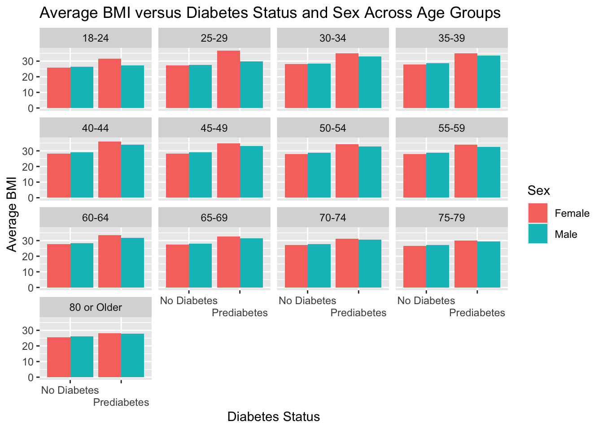
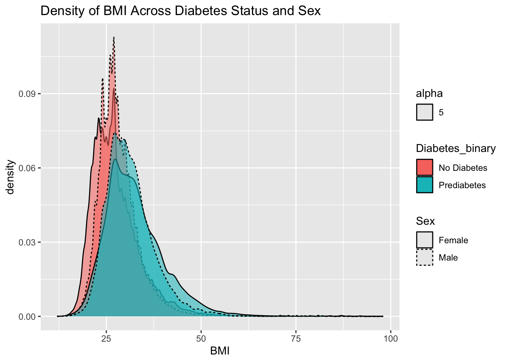

This project addresses the creation and selection of a predictive model on the Diabetes Health Indicators Dataset from Kaggle. The target (or response) variable is Diabetes_binary, where there are two classes: No Diabetes and Prediabetes or Diabetes. We will use all 21 predictor variables: HighBP, HighChol, CholCheck, BMI, Smoker, Stroke, HeartDiseaseorAttack, PhysActivity, Fruits, Veggies, HvyAlcoholConsump, AnyHealthcare, NoDocbcCost, Genhlth, MentHlth, PhysHlth, DiffWalk, Sex, Age, Education, and Income. We will treat everything but BMI as a categorical variable and BMI as a numeric variable.
In this page, we will explore both categorical and numeric variables that we will model in the following page to finally select a model that predicts the status of diabetes in a patient the best.
Data
First, let’s bring in the data from our local R Project .csv and name it diabetes_data.
library(tidyverse)
── Attaching core tidyverse packages ──────────────────────── tidyverse 2.0.0 ──
✔ dplyr 1.1.4 ✔ readr 2.1.5
✔ forcats 1.0.1 ✔ stringr 1.5.2
✔ ggplot2 4.0.0 ✔ tibble 3.3.0
✔ lubridate 1.9.4 ✔ tidyr 1.3.1
✔ purrr 1.1.0
── Conflicts ────────────────────────────────────────── tidyverse_conflicts() ──
✖ dplyr::filter() masks stats::filter()
✖ dplyr::lag() masks stats::lag()
ℹ Use the conflicted package (<http://conflicted.r-lib.org/>) to force all conflicts to become errors
That is quite interesting… our initial data makes no sense! Most of these variables are categorical, but they are saved right now as numerical. Let’s fix that by making them factor-type variables and saving this converted data as diabetes_convert.
diabetes_convert <- diabetes_data |>mutate(Diabetes_binary =factor(Diabetes_binary, levels=c(0, 1), labels=c('No Diabetes', 'Prediabetes or Diabetes')),HighBP =factor(HighBP,levels =c(0, 1),labels =c('No High BP', 'High BP')),HighChol =factor(HighChol,levels =c(0, 1),labels =c('No High Cholesterol', 'High Cholesterol')),CholCheck =factor(CholCheck,levels =c(0, 1),labels =c('No Cholesterol Check in Five Years', 'Cholesterol Check in Five Years')),Smoker =factor(Smoker,levels =c(0, 1),labels =c('Smoked Less than 100 Cigarettes in Life', 'Smoked More than 100 Cigarettes in Life')),Stroke =factor(Stroke,levels =c(0,1),labels =c('Has Never Had a Stroke', 'Has Had a Stroke')),HeartDiseaseorAttack =factor(HeartDiseaseorAttack,levels =c(0, 1),labels =c('No CHD or MI', 'CHD or MI')),PhysActivity =factor(PhysActivity,levels =c(0, 1),labels =c('No Physical Activity in Past 30 Days', 'Physical Activity in Past 30 Days')),Fruits =factor(Fruits,levels =c(0, 1),labels =c('Does Not Consume Fruit at Least Once Per Day', 'Consumes Fruit at Least Once Per Day')),Veggies =factor(Veggies,levels =c(0, 1),labels =c('Does Not Consume Vegetables at Least Once Per Day', 'Consumes Vegetables at Least Once Per Day')),HvyAlcoholConsump =factor(HvyAlcoholConsump,levels =c(0, 1),labels =c('No Heavy Alcohol Consumption', 'Heavy Alcohol Consumption')),AnyHealthcare =factor(AnyHealthcare,levels =c(0, 1),labels =c('Has No Healthcare', 'Has Healthcare')),NoDocbcCost =factor(NoDocbcCost,levels =c(0, 1),labels =c('No Time of Not Visiting Doctor Because of Cost','Time Where Did Not Visit Doctor Because of Cost')),GenHlth =factor(GenHlth,levels =c(1, 2, 3, 4, 5),labels =c('Excellent', 'Very Good', 'Good', 'Fair', 'Poor')),MentHlth =factor(MentHlth),PhysHlth =factor(PhysHlth),DiffWalk =factor(DiffWalk,levels =c(0, 1),labels =c('No Difficulty Walking or Climbing Stairs', 'Difficulty Walking or Climbing Stairs')),Sex =factor(Sex,levels =c(0, 1),labels =c('Female', 'Male')),Age =factor(Age,levels =c(1, 2, 3, 4, 5, 6, 7, 8, 9, 10, 11, 12, 13),labels =c('18-24', '25-29', '30-34','35-39', '40-44', '45-49','50-54', '55-59', '60-64', '65-69', '70-74', '75-79','80 or Older')),Education =factor(Education,levels =c(1, 2, 3, 4, 5, 6),labels =c('Never attended school or only kindergarten','Grades 1-8 (Elementary)','Grades 9-11 (Some high School)','Grade 12 or GED (High School Graduate)','College 1 Year to 3 Years (Some College or Technical School)','College 4 Years or More (College Graduate)')),Income =factor(Income,levels =c(1, 2, 3, 4, 5, 6, 7, 8),labels =c('Less than $10,000','$10,000 - $15,000','$15,000 - $20,000','$20,000 - $25,000','$25,000 - $35,000','$35,000 - $50,000','$50,000 - $75,000','$75,000 or More' )) )head(diabetes_convert)
Diabetes_binary HighBP HighChol
1 No Diabetes High BP High Cholesterol
2 No Diabetes No High BP No High Cholesterol
3 No Diabetes High BP High Cholesterol
4 No Diabetes High BP No High Cholesterol
5 No Diabetes High BP High Cholesterol
6 No Diabetes High BP High Cholesterol
CholCheck BMI
1 Cholesterol Check in Five Years 40
2 No Cholesterol Check in Five Years 25
3 Cholesterol Check in Five Years 28
4 Cholesterol Check in Five Years 27
5 Cholesterol Check in Five Years 24
6 Cholesterol Check in Five Years 25
Smoker Stroke
1 Smoked More than 100 Cigarettes in Life Has Never Had a Stroke
2 Smoked More than 100 Cigarettes in Life Has Never Had a Stroke
3 Smoked Less than 100 Cigarettes in Life Has Never Had a Stroke
4 Smoked Less than 100 Cigarettes in Life Has Never Had a Stroke
5 Smoked Less than 100 Cigarettes in Life Has Never Had a Stroke
6 Smoked More than 100 Cigarettes in Life Has Never Had a Stroke
HeartDiseaseorAttack PhysActivity
1 No CHD or MI No Physical Activity in Past 30 Days
2 No CHD or MI Physical Activity in Past 30 Days
3 No CHD or MI No Physical Activity in Past 30 Days
4 No CHD or MI Physical Activity in Past 30 Days
5 No CHD or MI Physical Activity in Past 30 Days
6 No CHD or MI Physical Activity in Past 30 Days
Fruits
1 Does Not Consume Fruit at Least Once Per Day
2 Does Not Consume Fruit at Least Once Per Day
3 Consumes Fruit at Least Once Per Day
4 Consumes Fruit at Least Once Per Day
5 Consumes Fruit at Least Once Per Day
6 Consumes Fruit at Least Once Per Day
Veggies
1 Consumes Vegetables at Least Once Per Day
2 Does Not Consume Vegetables at Least Once Per Day
3 Does Not Consume Vegetables at Least Once Per Day
4 Consumes Vegetables at Least Once Per Day
5 Consumes Vegetables at Least Once Per Day
6 Consumes Vegetables at Least Once Per Day
HvyAlcoholConsump AnyHealthcare
1 No Heavy Alcohol Consumption Has Healthcare
2 No Heavy Alcohol Consumption Has No Healthcare
3 No Heavy Alcohol Consumption Has Healthcare
4 No Heavy Alcohol Consumption Has Healthcare
5 No Heavy Alcohol Consumption Has Healthcare
6 No Heavy Alcohol Consumption Has Healthcare
NoDocbcCost GenHlth MentHlth PhysHlth
1 No Time of Not Visiting Doctor Because of Cost Poor 18 15
2 Time Where Did Not Visit Doctor Because of Cost Good 0 0
3 Time Where Did Not Visit Doctor Because of Cost Poor 30 30
4 No Time of Not Visiting Doctor Because of Cost Very Good 0 0
5 No Time of Not Visiting Doctor Because of Cost Very Good 3 0
6 No Time of Not Visiting Doctor Because of Cost Very Good 0 2
DiffWalk Sex Age
1 Difficulty Walking or Climbing Stairs Female 60-64
2 No Difficulty Walking or Climbing Stairs Female 50-54
3 Difficulty Walking or Climbing Stairs Female 60-64
4 No Difficulty Walking or Climbing Stairs Female 70-74
5 No Difficulty Walking or Climbing Stairs Female 70-74
6 No Difficulty Walking or Climbing Stairs Male 65-69
Education
1 Grade 12 or GED (High School Graduate)
2 College 4 Years or More (College Graduate)
3 Grade 12 or GED (High School Graduate)
4 Grades 9-11 (Some high School)
5 College 1 Year to 3 Years (Some College or Technical School)
6 College 4 Years or More (College Graduate)
Income
1 $15,000 - $20,000
2 Less than $10,000
3 $75,000 or More
4 $35,000 - $50,000
5 $20,000 - $25,000
6 $75,000 or More
Much better. Now, we can check each variable for ‘missingness’ by using a counting function to show how many entries are ‘NA’, ‘NULL’, or ‘NaN’ in each column.
Looks like we are in luck… No missing entries in any columns. Phew.
Summarizations
Now that we have the data cleaned and ready, we can explore summaries and graphs about the entire data set, which we’ve named diabetes_convert.
I began by summarizing our response variable of interest: Diabetes_binary, which indicates the diabetic status of the population, across the only numeric variable: BMI.
Excellent, now we can see the differences in the mean, median, variance, standard deviation, and interquartile range of the BMIs for both patients with no diabetic status and prediabetic/diabetic status.
Patients with prediabetic/diabetic status have a 4 point average and median difference of BMI from patients with no diabetes. The variance and standard deviations are also wider for prediabetic/diabetic patients than those without diabetes.
Let’s check out the contingency table of sex versus diabetic status.
`summarise()` has grouped output by 'Sex'. You can override using the `.groups`
argument.
# A tibble: 4 × 4
# Groups: Sex [2]
Sex Diabetes_binary count Proportion
<fct> <fct> <int> <dbl>
1 Female No Diabetes 123563 0.870
2 Female Prediabetes or Diabetes 18411 0.130
3 Male No Diabetes 94771 0.848
4 Male Prediabetes or Diabetes 16935 0.152
Perfect! We can see that for females, the proportion of patients with prediabetes/diabetes versus no diabetes is around 13%, while 15% of the male patients are prediabetic/diabetic. I wonder what else we can find…
`summarise()` has grouped output by 'AnyHealthcare', 'HighBP', 'HighChol'. You
can override using the `.groups` argument.
# A tibble: 16 × 6
# Groups: AnyHealthcare, HighBP, HighChol [8]
AnyHealthcare HighBP HighChol Proportion `No Diabetes` Prediabetes or Diabe…¹
<fct> <fct> <fct> <dbl> <int> <int>
1 Has No Healt… No Hi… No High… 0.969 6199 NA
2 Has No Healt… No Hi… No High… 0.0313 NA 200
3 Has No Healt… No Hi… High Ch… 0.883 1529 NA
4 Has No Healt… No Hi… High Ch… 0.117 NA 203
5 Has No Healt… High … No High… 0.847 1604 NA
6 Has No Healt… High … No High… 0.153 NA 290
7 Has No Healt… High … High Ch… 0.695 1663 NA
8 Has No Healt… High … High Ch… 0.305 NA 729
9 Has Healthca… No Hi… No High… 0.957 91452 NA
10 Has Healthca… No Hi… No High… 0.0426 NA 4069
11 Has Healthca… No Hi… High Ch… 0.896 36929 NA
12 Has Healthca… No Hi… High Ch… 0.104 NA 4270
13 Has Healthca… High … No High… 0.832 35174 NA
14 Has Healthca… High … No High… 0.168 NA 7101
15 Has Healthca… High … High Ch… 0.703 43784 NA
16 Has Healthca… High … High Ch… 0.297 NA 18484
# ℹ abbreviated name: ¹`Prediabetes or Diabetes`
This contingency table tells an interesting story…patients with no healthcare, high blood pressure, and high cholesterol have the highest rates of prediabetes/diabetes.
`summarise()` has grouped output by 'Income'. You can override using the
`.groups` argument.
# A tibble: 16 × 4
# Groups: Income [8]
Income Proportion `No Diabetes` `Prediabetes or Diabetes`
<fct> <dbl> <int> <int>
1 Less than $10,000 0.757 7428 NA
2 Less than $10,000 0.243 NA 2383
3 $10,000 - $15,000 0.738 8697 NA
4 $10,000 - $15,000 0.262 NA 3086
5 $15,000 - $20,000 0.777 12426 NA
6 $15,000 - $20,000 0.223 NA 3568
7 $20,000 - $25,000 0.799 16081 NA
8 $20,000 - $25,000 0.201 NA 4054
9 $25,000 - $35,000 0.826 21379 NA
10 $25,000 - $35,000 0.174 NA 4504
11 $35,000 - $50,000 0.855 31179 NA
12 $35,000 - $50,000 0.145 NA 5291
13 $50,000 - $75,000 0.878 37954 NA
14 $50,000 - $75,000 0.122 NA 5265
15 $75,000 or More 0.920 83190 NA
16 $75,000 or More 0.0796 NA 7195
26.2% of patients in the $10k to $15k income range have prediabetic/diabetic status, which is the highest percentage across income groups, followed by 24.2% of patients in the $10k or less income group.
`summarise()` has grouped output by 'Education'. You can override using the
`.groups` argument.
# A tibble: 12 × 4
# Groups: Education [6]
Education Proportion `No Diabetes` Prediabetes or Diabe…¹
<fct> <dbl> <int> <int>
1 Never attended school or onl… 0.730 127 NA
2 Never attended school or onl… 0.270 NA 47
3 Grades 1-8 (Elementary) 0.707 2860 NA
4 Grades 1-8 (Elementary) 0.293 NA 1183
5 Grades 9-11 (Some high Schoo… 0.758 7182 NA
6 Grades 9-11 (Some high Schoo… 0.242 NA 2296
7 Grade 12 or GED (High School… 0.824 51684 NA
8 Grade 12 or GED (High School… 0.176 NA 11066
9 College 1 Year to 3 Years (S… 0.852 59556 NA
10 College 1 Year to 3 Years (S… 0.148 NA 10354
11 College 4 Years or More (Col… 0.903 96925 NA
12 College 4 Years or More (Col… 0.0969 NA 10400
# ℹ abbreviated name: ¹`Prediabetes or Diabetes`
Folks with only elementary education (29.3%) or lower (27%) had a much higher proportion of prediabetes/diabetes status than any further education category.
We can now check to see the diabetes status, sex, age, and BMI statistics all in one table.
`summarise()` has grouped output by 'Diabetes_binary', 'Sex'. You can override
using the `.groups` argument.
summary_stats
# A tibble: 52 × 5
# Groups: Diabetes_binary, Sex [4]
Diabetes_binary Sex Age mean_BMI median_BMI
<fct> <fct> <fct> <dbl> <dbl>
1 No Diabetes Female 18-24 25.7 24
2 No Diabetes Female 25-29 27.3 26
3 No Diabetes Female 30-34 28.1 26
4 No Diabetes Female 35-39 27.9 27
5 No Diabetes Female 40-44 28.1 27
6 No Diabetes Female 45-49 28.1 27
7 No Diabetes Female 50-54 27.9 27
8 No Diabetes Female 55-59 27.8 27
9 No Diabetes Female 60-64 27.7 27
10 No Diabetes Female 65-69 27.5 27
# ℹ 42 more rows
This is hard to comprehend, so let’s turn it into a nice plot.
I’m using faceting to show the average BMI for non-diabetics versus prediabetics/diabetic and sex across age groups.
library(ggplot2)ggplot(summary_stats, aes(x = Diabetes_binary, y=mean_BMI, fill = Sex)) +geom_col(stat ='identity', position ='dodge') +facet_wrap(~Age) +labs(x='Diabetes Status',y='Average BMI',title ='Average BMI versus Diabetes Status and Sex Across Age Groups') +guides(x=guide_axis(n.dodge =2))

We can see that in each age group, regardless of the sex of the patient, patients with prediabetes/diabetes have higher average BMIs than patients with no diabetes status.
Let’s check out a density plot to investigate the BMI variable.
ggplot(diabetes_convert, aes(x=BMI,fill=Diabetes_binary, alpha =5, linetype = Sex)) +geom_density(kernel='gaussian') +labs(title ='Density of BMI Across Diabetes Status and Sex')

This density plot shows the varying frequencies of each BMI across both Diabetes Status and Sex. The ‘No Diabetes’ and ‘Prediabetes or Diabetes’ plots both have similar shapes, but the ‘No Diabetes’ plot is centered around a lower BMI. There appear to be more male patients than female patients as well. Both male and female patients follow similar patterns within the plots and there are only a few patients with BMIs greater than 50: where these are exclusively prediabetic/diabetic patients.